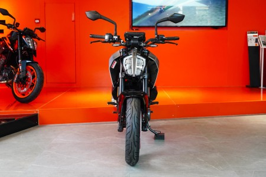
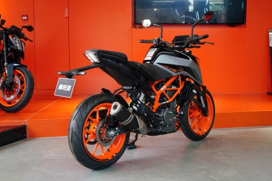

首页
车型库
榜单
咨询
关于摩托范
KTM 390 Duke 口碑
查看所有评价>
8.0
72人参与
外观
动力
操控
质量
舒适
Ookay
KTMR2R 2021款 390 Duke
动力！动力！动力！ 原来骑的cb400f很舒适但是感觉不到激情，这车第一次骑就爱上了，动力杠杠的，拉着你往前跑的感觉，好像不断的在催着你拧油门啊，换个尾段更是感觉爽的一比！ 另外就是车轻操控好，市区通勤跑山都很舒服，KTM这方面确实功底深厚。


007_9971
KTMR2R 2021款 390 Duke
属于自己的第一辆摩托车，同级别排量操控，加速，动力无敌好吧，很直接的动力反馈，之前也在玩越野车，390一档开油大点真的有惊喜，那种很直接的反馈，拽着你往前跑，直接翘头
城区，山路反正很灵活，车身轻巧，这个车最好的感觉就是你骑上去就想拧油门，看着转速表变红变黑，会很兴奋，属于那种你很想驾驭它，那种换挡顿挫感可以理解为拉扯感，哈哈哈
我的车没有出现过减震漏油，发动机渗油什么的
酷酷酷的王
KTMR2R 2021款 390 Duke
动力随叫随到一档起步都可以翘头，平常过拦路有坑或者减速带不用减速直接给油过前叉不愧是WP，极速别人说能跑170我最多拉到150 相对来说同等级的比较喜欢暴躁大扭矩不介意大单缸的杜克390必须第一首选 因为可玩性太高了